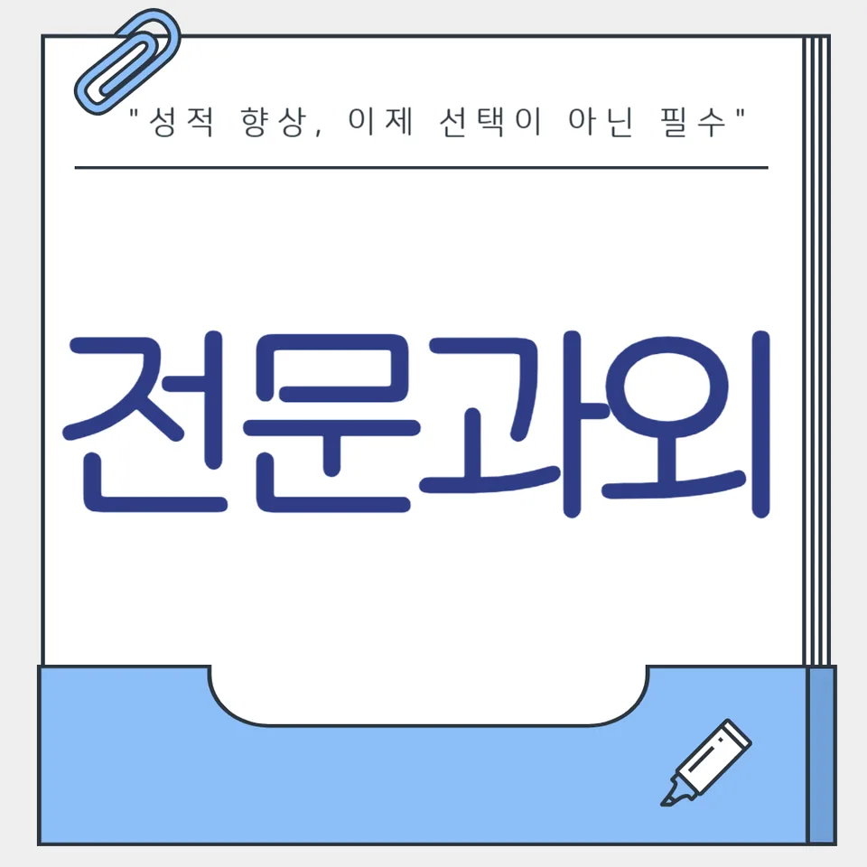

PageType : SUBJECT
URL : /경기도과외/안산시과외/단원구과외/고잔동과외/고잔동수학과외/
지역 교육환경이 수학 학습에 미치는 영향
고잔동수학과외를 찾는 학생들은 대체로 학교 수업 속도와 평가 대비를 동시에 고민합니다. 같은 개념을 배워도 고잔동수학과외가 강조하는 학습 루틴은 ‘지금 이해’보다 ‘며칠 뒤 내신에서 떠올릴 수 있는 상태’를 목표로 두는 편입니다. 학원이나 스터디를 병행하는 학생도 늘면서, 수학 학습 시간의 분배가 자연스럽게 경쟁 심리를 자극하기도 합니다.
또한 지역마다 방과후 활동과 자율학습 문화가 달라서, 시험 직전 몰아서 공부하는 패턴이 쉽게 굳어지는 경우가 있습니다. 고잔동수학과외에서는 이 흐름을 끊기 위해 개념과 연습이 이어지는 순서를 점검합니다. 학교에서 문제를 풀 때는 익숙해 보이던 학생도, 다음 단원에서 같은 유형이 다른 형태로 나오면 다시 막히는 일이 자주 관찰됩니다. 그래서 학습 분위기 자체가 ‘빠른 진도’에만 쏠리지 않도록 수학 학습의 기본 리듬을 설계합니다.
학생 입장에서는 수학이 점점 누적되는 과목이라는 감각이 생기는 순간이 있습니다. 중간고사 전후로 “이제는 그냥 많이 풀면 되겠지”라고 생각했던 방식이 흔들리면서, 학습 계획을 다시 잡게 됩니다. 이때 고잔동수학과외는 공부습관을 단순히 늘리는 것이 아니라 내신 흐름에 맞춰 조정하는 데 집중합니다.
학교별 평가 방식과 학습 방향
학교마다 내신의 비중과 서술형·과정 중심 채점 방식이 달라서, 수학 학습 방향도 달라집니다. 같은 문제를 풀어도 답만 빠르게 적는 학생보다 사고 과정을 정리해 두는 학생이 더 점수를 안정적으로 가져가는 경우가 많습니다. 고잔동수학과외에서는 이 차이를 학생이 체감하도록 수업 후 정리 방식부터 바꿉니다.
수행평가가 있는 학교에서는 ‘개념을 적용하는 설명’이 중요해질 수 있습니다. 학생은 문제 해결을 하면서 왜 그런 선택을 했는지 한 줄이라도 남기게 됩니다. 이 과정이 익숙해지면 오답이 단순 실수가 아니라 다음 문제의 단서가 됩니다. 학부모 또한 채점 기준을 알고 나서 공부 방향을 조정하게 되는데, 시험 대비와 일상 공부의 경계가 흐려지던 시기를 정리하려는 경향이 강합니다.
시험이 가까워질수록 학교 수업의 효율이 높아져야 하는데, 준비가 늦으면 ‘어려운 문제를 추가로 더 풀기’로만 대응하게 됩니다. 고잔동수학과외에서는 그 부담을 완화하려고 학교에서 실제로 다루는 표현, 단서, 문장 구조에 맞춰 연습을 묶습니다.
학생들이 수학을 어려워하는 주요 원인
학생들이 수학을 어렵게 느끼는 첫 신호는 단원이 바뀌기 직전에 나타납니다. 이전에 풀이가 되던 유형이 사라지고, 같은 개념을 다른 조건으로 묻는 순간 멈칫합니다. 이때 핵심은 문제의 난도보다 개념의 연결이 약해졌다는 점입니다. 고잔동수학과외에서는 “공부는 했는데 왜 점수가 안 따라오지”라는 혼란이 생기기 전, 개념을 이해하고 활용하는 학습 과정을 분해해 확인합니다.
또 다른 원인은 오답 처리의 방식입니다. 학생이 틀린 문제를 다시 풀지 않거나, 맞힌 문제만 반복하면 실력의 방향이 유지되지 않습니다. 고잔동수학과외는 틀린 문제를 볼 때 감정이 먼저 앞서는 학생을 위해, 왜 틀렸는지 항목을 고정해 관찰하도록 돕습니다. 같은 실수가 재발하는지 확인하는 시간이 늘면 사고력의 공백이 보이기 시작합니다.
학습 부담이 커지면 수학 학습이 ‘기억 테스트’처럼 느껴지는데, 이해 없이 암기만 하면 시험에서 단서가 바뀔 때 취약해집니다. 학생이 개념을 활용해 문제 해결로 연결하는 경험을 반복적으로 갖추게 되면 두려움이 줄어듭니다.
학년 변화에 따른 수학 학습의 차이
학년이 올라가면서 수학은 단순 계산보다 사고의 연결을 요구하는 비중이 커집니다. 중학교 초반에는 틀린 이유를 “어려워서”로 뭉뚱그리던 학생이, 학년이 바뀌며 “어느 단계에서 놓쳤는지”를 말하기 시작합니다. 고잔동수학과외는 이 전환이 자연스럽게 일어나도록 단계를 나눠 습관을 바꿉니다.
또한 시험 범위가 넓어지면 복습이 선택이 아니라 기본이 됩니다. 처음에는 복습을 줄이고 새 문제를 더 푸는 쪽으로 기울다가, 내신에서 반복되는 핵심이 보이기 시작하면 다시 방향이 잡힙니다. 이 전환 과정은 학생마다 속도가 달라서, 동일한 속도로 밀어붙이기보다 학습 계획의 단위를 조절합니다.
고등으로 갈수록 문제 해결력이 요구되는 장면이 늘어납니다. 서술형이나 과정 중심 문항에서는 풀이의 흐름을 정리하는 능력이 점수로 이어집니다. 그 결과 학부모도 “진도”보다 “점검”의 비중을 늘리게 되고, 자기주도학습의 형태가 구체화됩니다.
꾸준한 학습이 실력으로 이어지는 과정
꾸준함은 단순히 오래 하는 것이 아니라, 학습 성과를 누적시키는 방식입니다. 고잔동수학과외에서는 복습-적용-점검의 순환이 끊기지 않게 설계합니다. 짧은 시간이라도 개념을 다시 꺼내 보고, 그 개념이 어떤 유형에서 어떤 단서로 작동하는지 확인하는 과정이 반복됩니다.
시험 기간이 되면 학생의 패턴이 빠르게 바뀌는 편인데, 이때 계획이 흔들리면 이해가 남지 않은 채 문제만 늘어납니다. 고잔동수학과외는 시험 전후로 공부습관을 유지하는 방법을 다룹니다. 예를 들어 새 단원을 시작할 때도 이전에 배운 개념을 확인하는 짧은 루틴을 붙여, 부담이 커져도 사고의 기반이 무너지지 않게 합니다.
학습 자신감이 형성되는 과정은 ‘한 번 잘 맞는 경험’보다 ‘틀려도 회복되는 구조’를 만들 때 안정적입니다. 오답을 분석하고 반복 시간을 줄이며, 같은 유형의 실수를 사전에 차단하는 순간 학생은 수학이 통제 가능한 과목이라고 느끼기 시작합니다.
문제 해결력을 키우는 학습 습관
문제 해결은 풀이 속도보다 선택의 근거를 세우는 능력에서 출발합니다. 고잔동수학과외는 문제를 시작하기 전에 어떤 정보를 먼저 확인할지, 어떤 조건을 체크해야 하는지부터 정리합니다. 이 습관이 자리 잡으면 수학 학습은 단답형 풀이가 아니라 사고 과정의 기록이 됩니다.
학생이 성장하는 동안 가장 많이 변하는 장면은 ‘막혔을 때의 반응’입니다. 처음에는 답을 보고 따라 하려는 경향이 있지만, 반복 경험이 쌓이면 스스로 점검하는 시간이 늘어납니다. 오답이 생겼을 때 단순 재시도 대신 실수의 원인을 분류하면, 다음 문제에서 같은 함정을 피하려는 사고력 훈련이 됩니다.
시간을 효율적으로 활용하려면 공부의 순서를 고정하는 것이 도움이 됩니다. 고잔동수학과외에서는 어려운 문제부터 풀기보다 개념을 확인하고 활용 문제로 넘어가는 흐름을 만듭니다. 그렇게 하면 문제 해결 과정에서 필요한 이해가 남고, 시험에서 비슷한 유형을 만나도 당황이 줄어듭니다.
복습과 학습 관리가 중요한 이유
복습이 중요한 이유는 학교에서 다루는 내용이 누적되기 때문입니다. 어떤 단원은 연습을 통해 익숙해지지만, 시간이 지나면 조건을 읽는 속도가 느려져 다시 막힙니다. 그래서 고잔동수학과외에서는 복습을 ‘추가 공부’가 아니라 기존 학습을 재가동하는 과정으로 봅니다.
학습 관리를 할 때 학생은 계획을 세우는 순간에만 의욕을 보이고 금방 흐트러질 수 있습니다. 이때 필요한 것은 계획의 크기가 아니라 유지 방식입니다. 자기주도학습을 자리 잡게 하려면 매일의 부담을 줄이고, 확인 가능한 항목으로 공부습관을 쪼개야 합니다. 고잔동수학과외는 “무엇을 했는지”보다 “무엇이 남았는지”를 체크하게 합니다.
오답도 복습의 중심에 들어가야 내신에서 일관성이 생깁니다. 틀린 문제를 다시 풀되, 같은 실수가 반복되는지 확인하는 시간을 확보하면 복습이 효과를 갖습니다. 시험이 다가올수록 불안이 커지지만, 복습이 축적될수록 학생의 판단 기준이 단단해집니다. 그 결과 학부모도 교육 고민을 ‘더 시키기’에서 ‘관리의 방향’으로 전환하게 됩니다.
수학 학습에서 확인해야 할 핵심 요소
수학 학습을 점검할 때는 성취량보다 핵심 요소가 제대로 작동하는지 확인하는 것이 중요합니다. 고잔동수학과외는 학생이 학교 수업과 시험 범위에 맞춰 학습 계획을 세우는지부터 보며, 수학 개념을 이해하고 활용하는 흐름이 연결되는지 체크합니다.
또한 문제 해결 과정에서 사고력의 흔들림이 언제 시작되는지 확인합니다. 어떤 학생은 연습량이 부족해서가 아니라, 단계별로 확인해야 할 정보를 놓쳐서 실수가 커지기도 합니다. 오답을 분석해 반복을 줄이는 과정이 자리 잡으면 학습의 방향이 흔들리지 않습니다.
- 학교 수업과 시험 범위에 맞는 학습 계획을 세우고 있는지 확인합니다.
- 개념을 암기하는 데 그치지 않고 문제 해결 과정에 활용하고 있는지 점검합니다.
- 틀린 문제를 다시 풀어보며 실수의 원인을 꾸준히 분석합니다.
- 단기 성과보다 지속적인 복습과 학습 습관을 유지하고 있는지 살펴봅니다.
마지막으로 공부의 주체는 학생 자신이어야 합니다. 고잔동수학과외를 통해 자기주도학습의 감각이 생기면, 시험 기간에도 계획을 무너뜨리지 않고 시간을 효율적으로 활용하려는 태도가 이어집니다. 학교와 가정에서 같은 기준으로 점검하는 순간 학습 환경이 정렬되고, 학생은 점차 자신의 성장 속도를 관리할 수 있습니다.
자주 묻는 질문
수학 학습은 언제부터 체계적으로 준비하는 것이 좋을까요?
단원이 바뀌기 전부터 개념 확인과 짧은 복습을 시작하는 편이 좋습니다. 고잔동수학과외에서는 학교 수업 직후 정리 습관을 먼저 만들고, 내신에서 반복되는 포인트를 기준으로 학습 계획을 조정합니다.
학교 내신과 수행평가는 어떻게 함께 준비하면 좋을까요?
내신은 채점 기준에 맞춘 풀이 흐름이 중요하고, 수행평가는 개념을 설명하는 방식이 관건이 되는 경우가 많습니다. 고잔동수학과외에서는 시험 대비와 서술형 연습을 같은 방향으로 묶어 사고 과정이 남도록 관리합니다.
수학 개념이 부족한 학생도 학습 흐름을 따라갈 수 있을까요?
가능합니다. 핵심은 부족한 개념을 한 번에 메우는 방식이 아니라, 이해-적용-점검의 연결이 끊기지 않게 만드는 것입니다. 고잔동수학과외는 학생이 막히는 지점을 우선 찾아 그 부분부터 복습 구조를 붙입니다.
문제 해결력은 어떤 과정을 통해 향상될 수 있을까요?
문제를 풀기 전에 필요한 정보를 정리하고, 막혔을 때 어떤 근거로 다음 행동을 할지 훈련해야 합니다. 고잔동수학과외에서는 오답 분석을 통해 문제 해결의 사고 습관을 누적시키는 방식으로 접근합니다.
꾸준한 학습 습관은 어떻게 만들어갈 수 있을까요?
큰 목표보다 매일 확인 가능한 항목을 두고, 시험 기간에도 유지되는 루틴을 설계하는 것이 핵심입니다. 고잔동수학과외는 복습과 오답 정리를 공부습관으로 고정해 자기주도학습이 자리 잡도록 돕습니다.
